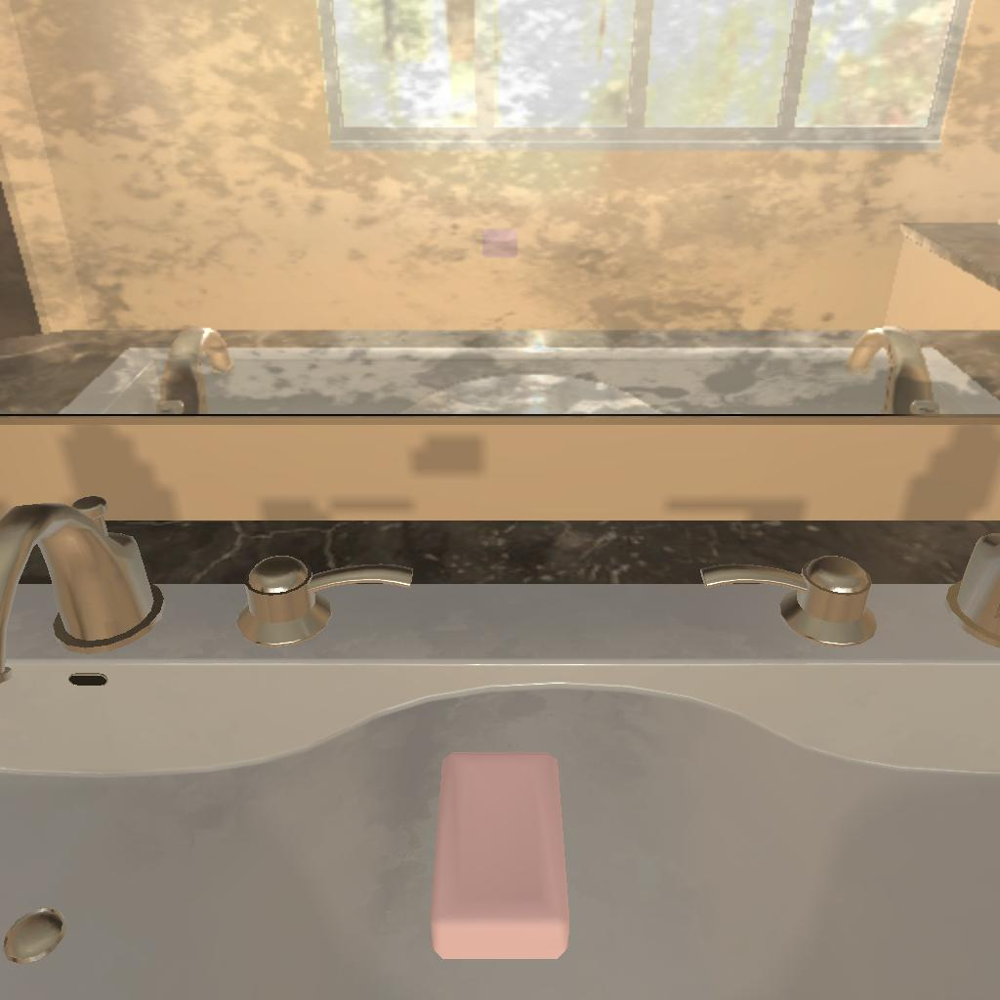

---------------------------------------------------------task: 11---------------------------------------------------------
--------------------------------------------------------------------------------------------------------------------------------------------------------------------
--------------------------------------------------------------------------------------------------------------------------------------------------------------------
Step:--------------------------------------------------------------------------7-------------------------------------------------------------------------------
----------------------------------------
VLM Prompt:
**Task**
Please perform as an embodied AI agent. Our final objective is to clean some soapbar and put it in bathtubbasin. Below is the plan for completing the task, the current observation, alongside historical data and admissible actions for the next step. Please determine the best action for the next step!
**Plan**
Below is a detailed step-by-step plan to complete the task.
1. Find a soap bar.
2. Pick up the soap bar.
3. Locate a sink or basin.
4. Clean the soap bar with the sink or basin.
5. Find a bathtub basin.
6. Place the cleaned soap bar in the bathtub basin.
**Current Observation**
Displayed is an image capturing the current position of the agent.
**History Information**
Displayed are the previous observations with their corresponding actions.
State 0:
No history.
State 1:
2. Step Index in the Plan: 1
3. Objects: Countertop, Sink
4. Action: go to cabinet 1
State 2:
1. Step Index in the Plan: 1
2. Objects: Countertop, Sink, Toilet, Garbage Can
3. Action: open cabinet 1
State 3:
1. Step Index in the Plan: 1
2. Objects: Countertop, Sink, Toilet, Garbage Can
3. Action: go to cabinet 2
State 4:
1. Step Index in the Plan: 1
2. Objects: Sink, Countertop, Closed Cabinet (likely cabinet 2)
3. Action: open cabinet 2
State 5:
1. Step Index in the Plan: 1
2. Objects: Sink, Countertop, Cabinet (already opened)
3. Action: go to countertop 1
State 6:
1. Step Index in the Plan: Not explicitly provided; the task is to pick up the soap bar.
2. Objects: Sink, Faucet, Countertop, Soap Bar (not directly mentioned but inferred).
3. Action: take soapbar 1 from countertop 1
State 7:
1. Step Index in the Plan: 4
2. Objects: Soap Bar, Sink, Faucet, Countertop
3. Action: go to sinkbasin 1
**Admissible Actions**
(1): go to bathtub 1
(2): go to bathtubbasin 1
(3): go to toilet 1
(4): go to cabinet 1
(5): go to sink 1
(6): go to cabinet 2
(7): go to garbagecan 1
(8): put soapbar 1 in/on sinkbasin 1
(9): clean soapbar 1 with bathtub 1
(10): clean soapbar 1 with bathtubbasin 1
(11): clean soapbar 1 with sink 1
(12): clean soapbar 1 with sinkbasin 1
(13): examine soapbar 1
**Analysis Guideline**
1. Analyze the history and current observation, and then determine our current step in the plan and our current place.
2. List all visible objects related to the task in the current observation, without summarizing any as "various items."
3. Analyze the objects in the current observation based on the history and the requirements for the current step, and then determine if we can complete the step with the current observation.
4. Analyze and decide on the most appropriate action to take.
5. Summarize the analysis using the following format: "Analysis: [The summarization of the analysis], The Most Appropriate Action: (i which is the integer.): [Selected action]"
**Notes**
1. We must complete each step of the plan in order and cannot skip steps when the previous ones are not finished.
2. For "Go to" actions listed as "go to xxx [n]", interpret this as there are n distinct actions available: "go to xxx 1", "go to xxx 2", ..., "go to xxx n". Select one specific action from these options instead of using "go to xxx [n]".
3. If receptacles such as drawers, cabinets, and so forth are closed in the current observation, we may try to open them.
4. Pay attention to synonyms and ensure clarity in the terms used.
5. We must determine and provide the single action which must be in the **Admissible Actions**.
6. If there is no history available, we are at the first step and the current place is "Unknown".
**Answer**
Please select the most suitable action by following the **Analysis Guideline**, keeping the above **Notes** in mind.
----------------------------------------
----------------------------------------
VLM Response:
Analysis: The current step in the plan is to clean the soap bar with the sink or basin. The current place appears to be in front of a sink with a soap bar visible on the countertop in front of the sink. The visible objects related to the task in the current observation are the soap bar, sink, and faucet. Based on the history and the current observation, it seems that the agent has successfully located and picked up the soap bar and is now in front of the sink, which is the correct location to perform the cleaning action as per the plan. The next logical step is to clean the soap bar using the sink or basin. The admissible action that corresponds to this step is to put the soap bar in the sink basin and then clean it. Since the "put soapbar 1 in/on sinkbasin 1" action is listed and is the appropriate next step before the cleaning action, this should be the action taken.
The Most Appropriate Action: (8): put soapbar 1 in/on sinkbasin 1
----------------------------------------
----------------------------------------
>>> Refine VLM Response and Get Pure Action: put soapbar 1 in/on sinkbasin 1
----------------------------------------
-----------------------------------------------------------------
Running time: 11.813435316085815 seconds
Total Money: 0
-----------------------------------------------------------------
-----------------------------------------------------------------
Summarization Prompt:
**Context**
Analysis: Since there is no history information, we are at the first step in the plan, which is to find a statue. The current place is unknown. In the current observation, we see a floorlamp next to an armchair with a small table that has a small object on it, which could potentially be the statue we are looking for. Since the plan requires us to find a statue first and it appears there might be one on the table next to the armchair, we should investigate this object to determine if it is the statue we need.
The Most Appropriate Action: (1): go to armchair 1
**Summary**
1. Step Index in the Plan: 1
2. Objects: Floorlamp, Armchair, Small Table, Small Object (potential statue)
3. Action: go to armchair 1
**Context**
Analysis: The current step in the plan is to clean the soap bar with the sink or basin. The current place appears to be in front of a sink with a soap bar visible on the countertop in front of the sink. The visible objects related to the task in the current observation are the soap bar, sink, and faucet. Based on the history and the current observation, it seems that the agent has successfully located and picked up the soap bar and is now in front of the sink, which is the correct location to perform the cleaning action as per the plan. The next logical step is to clean the soap bar using the sink or basin. The admissible action that corresponds to this step is to put the soap bar in the sink basin and then clean it. Since the "put soapbar 1 in/on sinkbasin 1" action is listed and is the appropriate next step before the cleaning action, this should be the action taken.
The Most Appropriate Action: (8): put soapbar 1 in/on sinkbasin 1
Please summarize the context by following above examples when providing the summary, and ensure that only the summary is included, without any extra explanation.
**Summary**
-----------------------------------------------------------------
-----------------------------------------------------------------
Summarization Response:
2. Step Index in the Plan: Unknown
3. Objects: Soap Bar, Sink, Faucet
4. Action: put soapbar 1 in/on sinkbasin 1
-----------------------------------------------------------------
-----------------------------------------------------------------
Text Observation:You put the soapbar 1 in/on the sinkbasin 1.
-----------------------------------------------------------------
UNSUCCEED